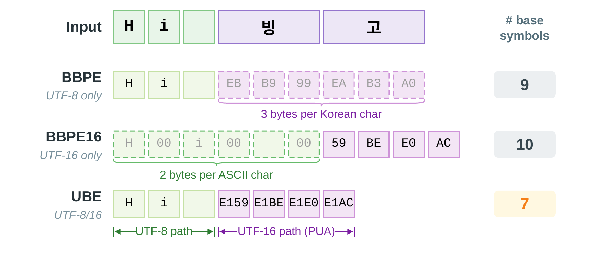
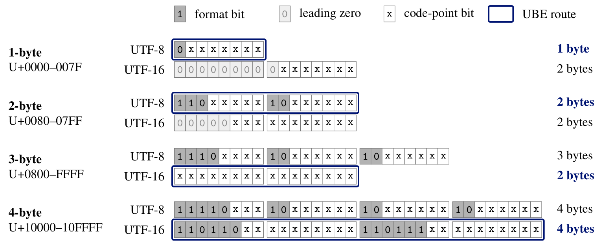
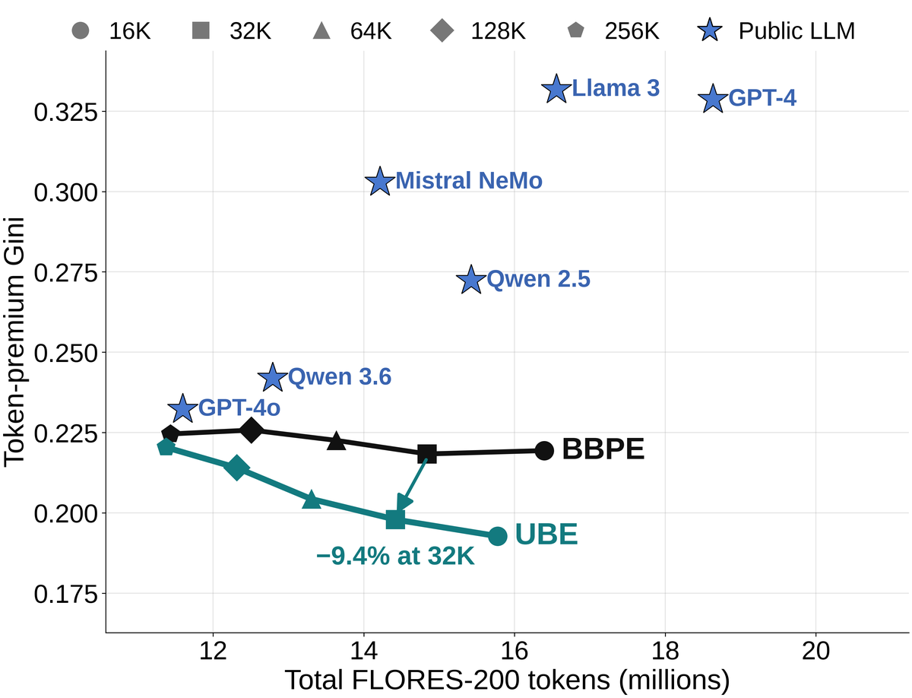
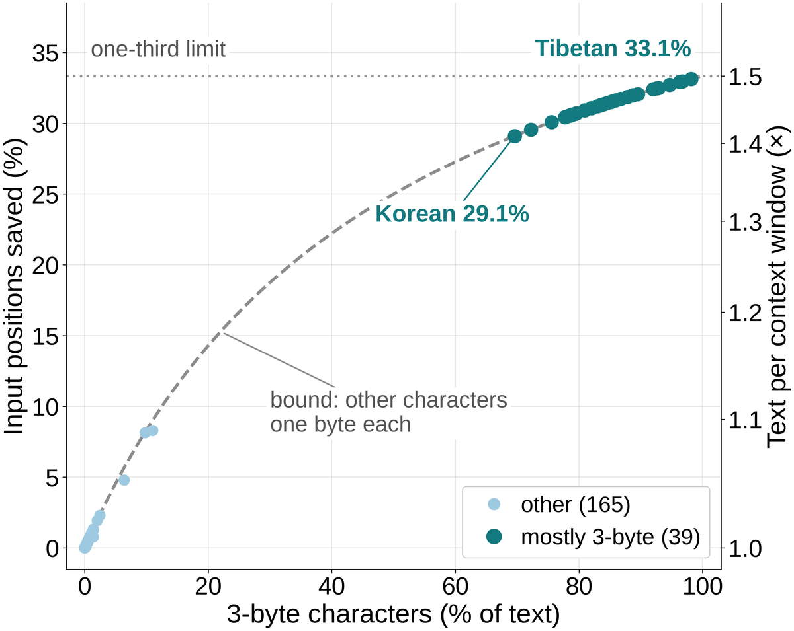

Universal Byte‑Level Encoding: UTF-8/UTF-16 Routing to Reduce Cross-Script Token-Budget Disparities
Samsung Research
UTF-8 where it is compact, UTF-16 where it is not. Lower cross-script disparity for BPE tokenizers, and up to one-third shorter inputs for byte-level models.

Abstract
Byte-level byte-pair encoding (BBPE) tokenizers are attractive for multilingual large language models because they cover all Unicode text. In UTF-8-based BBPE, however, many scripts start from a higher fallback cost than English: when no learned merges apply, a multibyte character requires multiple byte-derived symbols. We call this worst-case pre-merge cost the encoding floor. A higher floor can increase token counts and per-request cost and shrink usable context. Changing the whole text encoding can reduce this gap but can make already-efficient English spans more expensive in mixed-script text. We propose Universal Byte-Level Encoding (UBE), a dual-alphabet tokenizer that keeps 1–2-byte UTF-8 characters in UTF-8 and routes 3–4-byte characters through UTF-16. This lowers the encoding floor for 3-byte Basic Multilingual Plane characters, used by many scripts that need more tokens than English, without raising it for any character. UBE changes only the symbols presented to byte-pair encoding, and a Unicode 17 audit confirms exact round trips for every scalar value and every input in three official test suites. UBE also composes with other boundary policies and morphology-based encodings. Across intrinsic evaluations, UBE lowers dispersion in English-normalized token-count ratios (Gini 6–14% lower on FLORES-200 at 16K–64K), reducing cross-lingual token-budget disparity. In multilingual language models, UBE matches BBPE’s quality. In the main multilingual settings, UBE reduces token counts most where they are highest and also lowers English counts, yielding more usable context and faster prompt processing in content-matched benchmarks. Byte-level models benefit directly: UBE shortens their inputs by 29–33% in all 39 FLORES-200 languages written mostly in 3-byte characters (1.4–1.5 times as much text per context window), lowers byte-level Gini by 28%, and lengthens no input.
How UBE works
UBE is a byte representation for byte-level BPE that keeps BPE training and merges standard, and an input representation for training byte-level models. A character of one or two UTF-8 bytes keeps its UTF-8 bytes; a character of three or four UTF-8 bytes is written with the bytes of its UTF-16LE code units. The 3-byte characters of the Basic Multilingual Plane, used by Korean, Chinese, Japanese, Indic, Thai, Ethiopic and many other scripts, therefore start from two base symbols instead of three, while ASCII keeps exactly the bytes it had.
Base symbols per character
| 1-byte UTF-8 (ASCII) | 2-byte UTF-8 | 3-byte UTF-8 (BMP) | 4-byte UTF-8 (non-BMP) | |
|---|---|---|---|---|
| UBE | 1 | 2 | 2 | 4 |
| BBPE (UTF-8) | 1 | 2 | 3 | 4 |
| BBPE16 (UTF-16) | 2 | 2 | 2 | 4 |
By design, UTF-8 is less compact for 3-byte BMP characters: a 3-byte sequence (1110xxxx 10xxxxxx
10xxxxxx) spends 8 of its 24 bits on length and continuation markers that make UTF-8 self-synchronizing,
leaving 16 code-point bits, which UTF-16 stores in 2 bytes.

These counts give the encoding floor: the base-symbol cost before BPE merging. With a 16K BBPE tokenizer trained on 101 languages, a FLORES-200 sentence in the seven languages written in Tibetan, Myanmar, Ol Chiki or Tifinagh script takes 308.522 tokens on average and an English sentence 34.863, so the same context window holds only about one-ninth as much parallel text in these scripts as in English.
Results
Tokenizers
- Lower token-budget disparity. On FLORES-200 with tokenizers trained on 101 languages, the Gini coefficient of English-normalized token premiums falls from 0.2183 to 0.1979 (−9.4%) at a 32K vocabulary, and UBE uses fewer tokens in 189 of the 204 languages. The Gini is 6–14% lower in all nine core settings (English-only, 6-language and 101-language training at 16K, 32K and 64K), and with the 101-language 32K tokenizers it also falls on the UDHR public-text stress test (−11.1%) and SIB-200, a topic-labeled subset of FLORES-200 (−8.5%).
- Fewer tokens where they cost most. With 101-language 16K tokenizers, Santali (Ol Chiki), Central Atlas Tamazight (Tifinagh) and Tibetan need 29–34% fewer tokens. English needs fewer tokens too, at every tested vocabulary size in the paper’s multilingual settings.
- More text for the same budget. Under a fixed token budget, Santali (Ol Chiki) fits 53% more text with 101-language 32K tokenizers, and English 0.3% more. In a content-matched prompt-processing benchmark with a 182M-parameter model and 6-language 32K tokenizers, the full-model prefill rate rises by 45.0% for Amharic and by 3.9% for English.
- Robust to the training mixture. With 30 GiB mC4 tokenizer-training mixtures that emulate GPT-4o, Mistral NeMo and a Chinese-centric scenario, UBE uses 1.9–4.6% fewer tokens, lowers Other BMP tokens by 12.5–25.3% and the token-premium Gini by 5.5–11.7% in every pair, from 32K up to 200K vocabularies. English tokens fall in every pair as well, by up to 0.11%.
- Same language-model quality. In matched multilingual language-model experiments from 182M to 1.3B parameters and 32K to 128K vocabularies, UBE matches BBPE’s quality.
- Exact, with standard BPE. Every Unicode 17 scalar value round-trips exactly. BPE training and merges are standard, and the routing needs no language identification or script table.
- Composable. UBE changes only the byte representation, so it composes with SuperBPE-style and SCRIPT-style boundary policies and MYTE’s morphology maps while preserving those components. With 32K tokenizers trained on the primary 101-language corpus, the Gini falls from 0.1922 to 0.1725 with SuperBPE-style boundaries and from 0.2036 to 0.1824 with SCRIPT-style boundaries.

Mean tokens per sentence on FLORES-200 (101-language tokenizers, 32K)
| Language | UBE | BBPE | Change |
|---|---|---|---|
| Santali (Ol Chiki) | 222.944 | 341.287 | −34.7% |
| Central Atlas Tamazight (Tifinagh) | 183.305 | 269.166 | −31.9% |
| Tibetan | 286.737 | 336.804 | −14.9% |
| Arabic | 60.407 | 60.600 | −0.3% |
| English | 31.068 | 31.160 | −0.3% |
Byte-level models
- Shorter inputs in more languages. A byte-level model uses one input position per base symbol. On FLORES-200, UBE shortens the inputs of 202 of the 204 languages, ties the other two and lengthens none (189 languages use fewer tokens with the 101-language 32K BPE tokenizer).
- Large gains for 3-byte scripts. In the 39 languages written mostly in 3-byte characters, mean inputs are 29–33% shorter, so the same context window holds 1.41–1.50 times as much of this text.
- Lower disparity. The Gini coefficient of English-normalized premiums falls from 0.2077 to 0.1500, a 28% reduction, more than the 6–14% of the paper’s core BPE settings.
- English is shorter too. The English mean is 0.04% lower: ASCII keeps one symbol per character, and 3-byte characters such as em dashes and curly quotes, 0.037% of FLORES-200 English, take two symbols instead of three.
- Composes with MYTE. MYTE-UBE preserves MYTE’s morphology maps and decoded output while using 4.58% fewer base-symbol positions on FLORES-200: 201 of the 204 languages have shorter inputs and the other three are tied.
- The right byte first. UBE writes the low byte first, so the first symbol of a 3-byte BMP character already identifies it among the 256 code points that share its high byte. This matters for hierarchical byte-level models that cut patches with a learned boundary predictor. In The Right Byte First: How UTF-16 Helps Multilingual Boundary Prediction, small causal predictors with one-symbol lookahead reach 0.06% balanced grapheme-boundary error at code point boundaries on UBE input, versus 8.76% on UTF-8 and 8.62% on a big-endian variant of the same length, across 17 languages in 13 Brahmic scripts, which implicates byte order beyond the shorter input alone.

Mean base symbols per sentence on FLORES-200 (no merges)
| Languages | UBE | UTF-8 bytes | Change |
|---|---|---|---|
| Korean, Chinese, Japanese | 91.252 | 133.665 | −31.73% |
| Other BMP (7 languages) | 277.056 | 406.632 | −31.87% |
| All 204 languages | 176.088 | 196.106 | −10.21% |
| English | 130.481 | 130.530 | −0.04% |
FAQ
Answers to common questions, drawn from the paper. Unless noted otherwise, sequence-length results are on FLORES-200 devtest (1,012 parallel sentences in each of 204 language–script pairs, hereafter languages), and BPE comparisons use tokenizers trained on mC4 text. A token premium is a language’s mean tokens per sentence divided by English’s under the same tokenizer; FLORES-200 Gini uses the 203 non-English premiums.
Is decoding exact?
Yes. The paper proves exact round-trip decoding, and all 204 FLORES-200 languages decode without a failure. An
exhaustive Unicode 17 audit covers every scalar value and the official normalization, grapheme-break and emoji test
suites, and UBE recovers every input. The audit is included in paper/.
Why not use UTF-16 for everything?
UTF-16 writes every ASCII character as two bytes, doubling the base-symbol cost of ASCII text in English, code, digits and markup. UBE keeps ASCII at one symbol and gives 3-byte BMP characters two. In the figure above, “GPU性能” starts from 7 base symbols with UBE, 9 with UTF-8 BBPE and 10 with UTF-16 BBPE16.
What changes in BPE training or in the model?
UBE changes the byte representation used to train a new tokenizer. The base alphabet is the 512-symbol union of the
two byte alphabets; pair counting and merge selection are standard BPE, with no script-aware merge rule. Each tokenizer
is saved as a Hugging Face tokenizer.json, and models trained with it use an ordinary Transformer architecture.
Does UBE change English token counts?
English needs fewer tokens too. With multilingual tokenizer training (the paper’s 6-language and 101-language settings), English token counts are lower at every tested vocabulary size; with the 101-language 32K tokenizer they fall from 31.160 to 31.068 tokens per sentence. English is also lower in all ten pairs of the emulated commercial mixtures above. UBE leaves the ASCII base stream unchanged; English counts fall because 3-byte characters take two base symbols, so BPE spends fewer merges on them and more on ASCII subwords. A routed BMP character can be completed by one merge where BBPE needs two, and across the eight 6-language and 101-language settings, UBE spends 505–684 fewer merges on 3- and 4-byte characters and partial characters and gains mostly ASCII-only subwords (214–370 more). Byte-level English inputs are 0.04% shorter as well: 3-byte characters such as em dashes and curly quotes, 0.037% of the characters in FLORES-200 English, take 2 symbols instead of 3.
Can UBE be combined with SuperBPE or SCRIPT-BPE?
Yes. UBE changes only the byte representation, so it composes with boundary policies. With 32K tokenizers trained on the primary 101-language corpus and SuperBPE-style boundaries applied to both, UBE lowers Gini relative to BBPE from 0.1922 to 0.1725; with SCRIPT-style boundaries, from 0.2036 to 0.1824. In both cases UBE also uses fewer tokens.
Does any language get longer at the byte level?
No. Inputs are shorter in 202 of the 204 languages, and the other two, Catalan and Central Kurdish, are tied because their devtest text has no 3-byte character.
How does UBE affect language-model quality?
In the main multilingual experiments, where the corpus, architecture, optimizer and token-step budget are fixed and only the tokenizer changes, UBE matches BBPE’s quality, and checks at 230M/64K, 329M/128K and 1.3B/32K agree. A separate comparison uses five 32K tokenizers (UBE, BBPE, BBPE16, MYTE+BPE and SCRIPT-BPE) trained on approximately 50 MiB of mC4 text per language across 101 languages. With 182M-parameter models and matched supervised UTF-8 byte exposure, UBE has the lowest bits-per-byte (BPB) Gini and the highest multilingual and English benchmark-group means, with benchmarks weighted equally within each group.
Where is UBE most useful?
- Compact vocabularies of 16K–64K, for example in on-device models.
- Low-coverage scripts written in 3-byte BMP characters, which stay near the encoding floor.
- Byte-level models, which learn no merges.
Under commercial-style training mixtures, the Other BMP and Gini reductions persist up to 200K.
More questions are answered in the FAQ of the repository README.
Code
The repository is Hugging Face
tokenizers v0.23.3 with UBE, together with the
paper’s FLORES-200, Unicode and MYTE-UBE analyses. Use Python 3.10 or newer and a
Rust toolchain to build from source, in a fresh virtual environment:
python -m venv .venv
source .venv/bin/activate
pip install "git+https://github.com/Samsung/universal-byte-level-encoding@v0.23.3-ube.2#subdirectory=bindings/python"from tokenizers.implementations import UniversalByteLevelBPETokenizer
tokenizer = UniversalByteLevelBPETokenizer()
tokenizer.train(
files=["corpus.txt"],
vocab_size=32000,
min_frequency=2,
special_tokens=["<s>", "<pad>", "</s>", "<unk>", "<mask>"],
)
tokenizer.save("tokenizer.json")
encoding = tokenizer.encode("Hi 빙고💚")
assert tokenizer.decode(encoding.ids) == "Hi 빙고💚"Citation
@inproceedings{kim2026ube,
title = {Universal Byte-Level Encoding: {UTF-8}/{UTF-16} Routing to Reduce Cross-Script Token-Budget Disparities},
author = {Kim, Hyunsik and Jung, Youngmoon},
booktitle = {Advances in Neural Information Processing Systems},
volume = {39},
year = {2026},
url = {https://arxiv.org/abs/2610.01984}
}For UBE with byte-level models and boundary prediction, please also cite:
@article{kim2026rbf,
title = {The Right Byte First: How {UTF}-16 Helps Multilingual Boundary Prediction},
author = {Kim, Hyunsik},
journal = {arXiv preprint arXiv:2610.22071},
year = {2026},
url = {https://arxiv.org/abs/2610.22071}
}